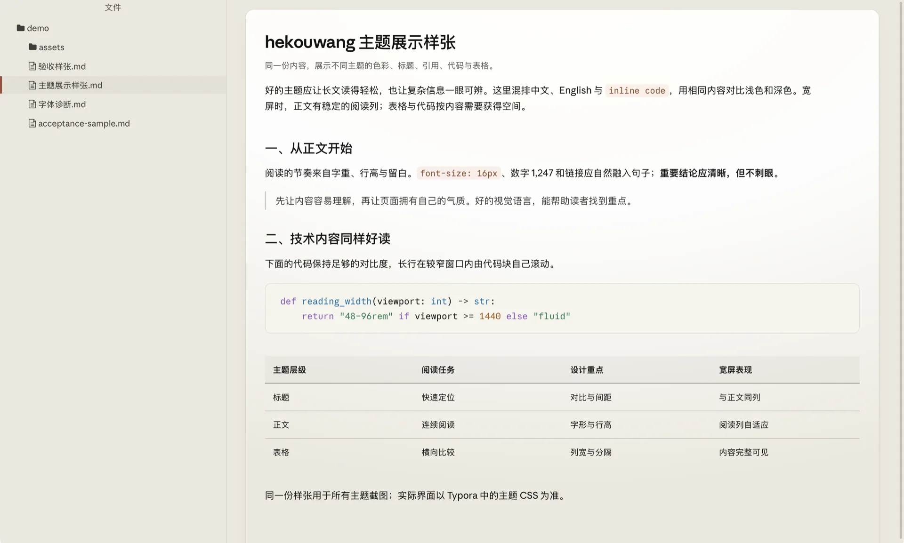

先把正文
1rem、行高1.65、阅读列宽钉死，再在这套指标上换皮肤。
这一页不是截图，也不是复刻样式：它直接加载仓库里 theme/hekouwang.css 的构建产物，用 Typora 同款的 #write 结构渲染。你在上面切换的每一个开关，改的都是这份 CSS 自己的变量。
它想解决的问题很具体：中文长文读两小时不累。行高偏紧、行宽乱跑、行内代码把行距顶开——单看一条都不致命，连读十几页就是疲劳。
主题最容易做的事是加装饰，最难的事是让所有块共享同一套节奏。所以先把三件事钉死，其余都在这套节奏里做加减。
正文 1rem，行高 1.65，段距 0.85rem；阅读列从 48rem 随窗口扩到 96rem，纸面再额外留 6rem 给代码和宽表格。窗口超过 1800px 时，行高放宽到 1.78、段距到 1rem——否则一行九十字会读成扫视。
西文走随包的 Inter 可变字重（约 100KB，只含拉丁），中文 fallback 到系统字体。不打包中文字体，既避开授权边界，也不用下载 20MB 字库。数字按比例对齐：2026 年、1,247 次、99.8%。
**加粗看字重是不是真的**、斜体、删除线、行内代码、一个链接，以及 高亮。行内代码只换字色和底色，不改变行高——长段落里夹十个术语也不会把行撑开。
引用块刻意不用品牌色竖条，也不铺沉底。边界来自一条浅灰竖线，字色降一档，金句自己会浮出来。
嵌套引用继续保持缩进，但不叠加更重的视觉。
无序列表的 marker 要够淡，序号要等宽，多位数不跳位：
行内代码 看行高有没有被顶开npm run build已完成项：文字淡化，不加删除线
未完成项：只有细边框
代码块 0.9375rem，比正文小一档，改用等宽字体；圆角与正文一致，边框只留发丝线。
/* 用户级覆盖：写在主题目录的 hekouwang.user.css 里 */
:root {
--hk-reading-measure: 40rem; /* 约 40 字宽的中文阅读列 */
}
#write h2 {
font-size: 1.45rem;
letter-spacing: -0.01em;
}
三列以内的小表最多 48rem，左对齐正文，不拉成一张大网；四列以上填满阅读列。
| 版本 | 视觉方向 | 适用场景 |
|---|---|---|
| V2 · 编辑（免费） | 素白纸面、墨绿点缀、直角纸卡 | 日常写作、通用长文 |
| V1 · 石墨青绿 | 冷蓝灰、薄荷青、紫色链接 | 技术笔记、产品文档 |
| V2 Pro · 典藏编辑 | 胡桃墨、古铜、暖纸色 | 随笔、长篇评论 |
数据表则按列数分配画布，不放任横向滚动把表头甩出屏幕。
| 指标 | 正文 | 代码 | 表格 | 导出 PDF |
|---|---|---|---|---|
| 字号 | 1rem | 0.9375rem | 0.875rem | 随导出设置 |
| 行高 | 1.65 | 1.55 | 1.6 | 1.65 |
| 宽度 | 阅读列 | 纸面 − 6rem | ≤9 列填满阅读列 | A4 页边距 |
| 强调 | 墨绿 | 低饱和语义色 | 只留横线 | 压平浮层 |
句中图片保持行内流动，独占一行的图片居中并留出图注位置。

（图：免费 V2 浅色，macOS Typora 实机截图。）
构建时逐套检查文字与控件的颜色对比度[1]，低于 AA 直接让构建失败——这是仓库里唯一不接受「看着还行」的地方。
scripts/contrast_check.py。 ↩